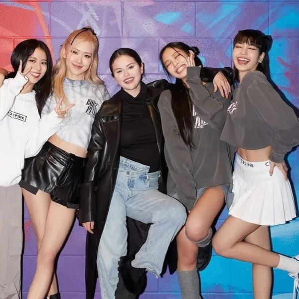
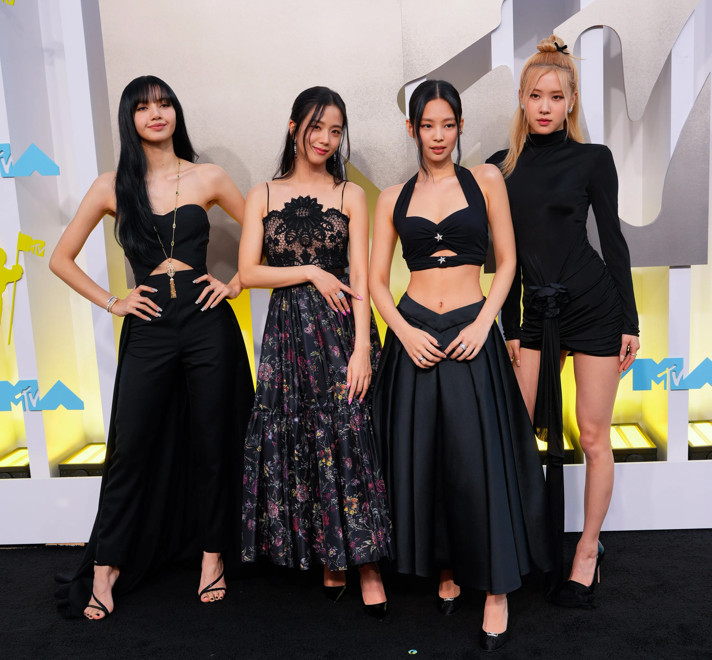
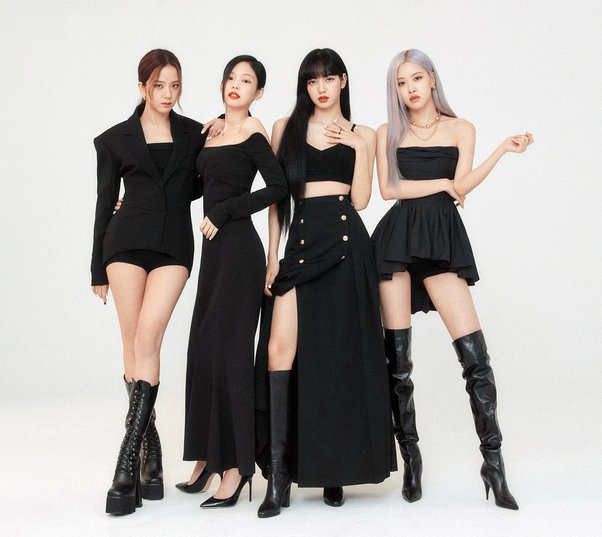

BLACKPINK IN YOUR AREA
Blackpink é um grupo de k-pop composto por quatro integrantes: Jisoo, Jennie, Rosé e Lisa. Elas são conhecidas não apenas pela sua música, mas também pelo seu estilo vibrante, coreografias sincronizadas e presença de palco cativante. O grupo foi formado pela YG Entertainment e fez sua estreia em 2016, desde então alcançou enorme popularidade tanto na Coreia do Sul quanto internacionalmente. Suas músicas frequentemente alcançam milhões de visualizações no YouTube, e elas são reconhecidas como uma das maiores e mais influentes bandas de k-pop da atualidade.
INTEGRANTES
- Nome do Grupo: BlackpinK
- Jisoo (Kim Ji-soo): Nascida em 3 de janeiro de 1995 em Seul, Coreia do Sul.
- Jennie (Jennie Kim): Nascida em 16 de janeiro de 1996 em Anyang, Gyeonggi, Coreia do Sul.
- Rosé (Park Chae-young): Nascida em 11 de fevereiro de 1997 em Auckland, Nova Zelândia (criada na Austrália).
- Lisa (Lalisa Manoban): Nascida em 27 de março de 1997 em Buriram, Tailândia.
- Agência: YG Entertainment
- Estreia: 8 de agosto de 2016, com o single album "Square One", que inclui as faixas "Whistle" e "Boombayah".
COACHELLA
Em abril de 2023, o BLACKPINK fez história ao ser o primeiro ato de k-pop a ser headliner do festival de música Coachella, realizado nos Estados Unidos. A apresentação foi transmitida ao vivo no YouTube e estava programada para ser o ato mais transmitido de todo o Coachella, segundo dados do TechRadar. Previa-se que atrairia 250 milhões de espectadores de transmissão ao vivo na plataforma.
POPULARIDADE INTERNACIONAL
Além de sua enorme base de fãs na Coreia do Sul, Blackpink tem uma base de fãs global massiva, especialmente nos Estados Unidos, Europa e sudeste asiático. O grupo tem colaborado com artistas internacionais como Lady Gaga e Selena Gomez.
PRÊMIOS E RECONHECIMENTOS
Blackpink ganhou inúmeros prêmios de prestígio, incluindo Melhor Artista Novo no Gaon Chart Music Awards, Melhor Grupo Feminino no Mnet Asian Music Awards, e muitos outros.
MODA
Blackpink tem uma forte influência na moda, tanto na Coreia do Sul quanto internacionalmente. Elas são conhecidas por suas escolhas de moda ousadas e ecléticas, que combinam elementos de alta moda com estilos urbanos e casuais. As integrantes do Blackpink frequentemente são escolhidas como embaixadoras de grandes marcas de moda, tanto na Coreia do Sul quanto globalmente. Elas colaboraram com marcas como Chanel, Dior, Adidas, Puma, Calvin Klein, e muitas outras, ampliando sua influência no mundo da moda.
THE ALBUM
Escute as melhores músicas do Blackpink e prepare-se para se apaixonar e sair dançando na sala.